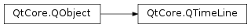

QTimeLine¶
Synopsis¶
Functions¶
- def
currentFrame() - def
currentTime() - def
currentValue() - def
curveShape() - def
direction() - def
duration() - def
easingCurve() - def
endFrame() - def
frameForTime(msec) - def
loopCount() - def
setCurveShape(shape) - def
setDirection(direction) - def
setDuration(duration) - def
setEasingCurve(curve) - def
setEndFrame(frame) - def
setFrameRange(startFrame, endFrame) - def
setLoopCount(count) - def
setStartFrame(frame) - def
setUpdateInterval(interval) - def
startFrame() - def
state() - def
updateInterval()
Virtual functions¶
- def
valueForTime(msec)
Slots¶
- def
resume() - def
setCurrentTime(msec) - def
setPaused(paused) - def
start() - def
stop() - def
toggleDirection()
Detailed Description¶
The
PySide2.QtCore.QTimeLineclass provides a timeline for controlling animations.It’s most commonly used to animate a GUI control by calling a slot periodically. You can construct a timeline by passing its duration in milliseconds to
PySide2.QtCore.QTimeLine‘s constructor. The timeline’s duration describes for how long the animation will run. Then you set a suitable frame range by callingPySide2.QtCore.QTimeLine.setFrameRange(). Finally connect theframeChanged()signal to a suitable slot in the widget you wish to animate (for example,PySide2.QtWidgets.QProgressBar.setValue()inPySide2.QtWidgets.QProgressBar). When you proceed to callingPySide2.QtCore.QTimeLine.start(),PySide2.QtCore.QTimeLinewill enter Running state, and start emittingframeChanged()at regular intervals, causing your widget’s connected property’s value to grow from the lower end to the upper and of your frame range, at a steady rate. You can specify the update interval by callingPySide2.QtCore.QTimeLine.setUpdateInterval(). When done,PySide2.QtCore.QTimeLineentersNotRunningstate, and emitsfinished().Example:
... progressBar = QProgressBar(self) progressBar.setRange(0, 100) # Construct a 1-second timeline with a frame range of 0 - 100 timeLine = QTimeLine(1000, self) timeLine.setFrameRange(0, 100) timeLine.frameChanged[int].connect(progressBar.setValue) # Clicking the push button will start the progress bar animation pushButton = QPushButton(QObject.tr("Start animation"), self) pushButton.clicked.connect(timeLine.start) ...By default the timeline runs once, from the beginning and towards the end, upon which you must call
PySide2.QtCore.QTimeLine.start()again to restart from the beginning. To make the timeline loop, you can callPySide2.QtCore.QTimeLine.setLoopCount(), passing the number of times the timeline should run before finishing. The direction can also be changed, causing the timeline to run backward, by callingPySide2.QtCore.QTimeLine.setDirection(). You can also pause and unpause the timeline while it’s running by callingPySide2.QtCore.QTimeLine.setPaused(). For interactive control, thePySide2.QtCore.QTimeLine.setCurrentTime()function is provided, which sets the time position of the time line directly. Although most useful inNotRunningstate, (e.g., connected to avalueChanged()signal in aPySide2.QtWidgets.QSlider,) this function can be called at any time.The frame interface is useful for standard widgets, but
PySide2.QtCore.QTimeLinecan be used to control any type of animation. The heart ofPySide2.QtCore.QTimeLinelies in thePySide2.QtCore.QTimeLine.valueForTime()function, which generates a value between 0 and 1 for a given time. This value is typically used to describe the steps of an animation, where 0 is the first step of an animation, and 1 is the last step. When running,PySide2.QtCore.QTimeLinegenerates values between 0 and 1 by callingPySide2.QtCore.QTimeLine.valueForTime()and emittingvalueChanged(). By default,PySide2.QtCore.QTimeLine.valueForTime()applies an interpolation algorithm to generate these value. You can choose from a set of predefined timeline algorithms by callingPySide2.QtCore.QTimeLine.setCurveShape().Note that by default,
PySide2.QtCore.QTimeLineuses the EaseInOut curve shape, which provides a value that grows slowly, then grows steadily, and finally grows slowly. For a custom timeline, you can reimplementPySide2.QtCore.QTimeLine.valueForTime(), in which casePySide2.QtCore.QTimeLine‘sPySide2.QtCore.QTimeLine.curveShape()property is ignored.
-
class
PySide2.QtCore.QTimeLine([duration=1000[, parent=nullptr]])¶ Parameters: - duration –
PySide2.QtCore.int - parent –
PySide2.QtCore.QObject
Constructs a timeline with a duration of
durationmilliseconds.parentis passed toPySide2.QtCore.QObject‘s constructor. The default duration is 1000 milliseconds.- duration –
-
PySide2.QtCore.QTimeLine.State¶ This enum describes the state of the timeline.
Constant Description QTimeLine.NotRunning The timeline is not running. This is the initial state of PySide2.QtCore.QTimeLine, and the statePySide2.QtCore.QTimeLinereenters when finished. The current time, frame and value remain unchanged until eitherPySide2.QtCore.QTimeLine.setCurrentTime()is called, or the timeline is started by callingPySide2.QtCore.QTimeLine.start().QTimeLine.Paused The timeline is paused (i.e., temporarily suspended). Calling PySide2.QtCore.QTimeLine.setPaused()(false) will resume timeline activity.QTimeLine.Running The timeline is running. While control is in the event loop, PySide2.QtCore.QTimeLinewill update its current time at regular intervals, emittingvalueChanged()andframeChanged()when appropriate.See also
PySide2.QtCore.QTimeLine.state()stateChanged()
-
PySide2.QtCore.QTimeLine.Direction¶ This enum describes the direction of the timeline when in
Runningstate.Constant Description QTimeLine.Forward The current time of the timeline increases with time (i.e., moves from 0 and towards the end / duration). QTimeLine.Backward The current time of the timeline decreases with time (i.e., moves from the end / duration and towards 0).
-
PySide2.QtCore.QTimeLine.CurveShape¶ This enum describes the default shape of
PySide2.QtCore.QTimeLine‘s value curve. The default, shape is . The curve defines the relation between the value and the timeline.Constant Description QTimeLine.EaseInCurve The value starts growing slowly, then increases in speed. QTimeLine.EaseOutCurve The value starts growing steadily, then ends slowly. QTimeLine.EaseInOutCurve The value starts growing slowly, then runs steadily, then grows slowly again. QTimeLine.LinearCurve The value grows linearly (e.g., if the duration is 1000 ms, the value at time 500 ms is 0.5). QTimeLine.SineCurve The value grows sinusoidally. QTimeLine.CosineCurve The value grows cosinusoidally.
-
PySide2.QtCore.QTimeLine.currentFrame()¶ Return type: PySide2.QtCore.intReturns the frame corresponding to the current time.
-
PySide2.QtCore.QTimeLine.currentTime()¶ Return type: PySide2.QtCore.int
-
PySide2.QtCore.QTimeLine.currentValue()¶ Return type: PySide2.QtCore.qrealReturns the value corresponding to the current time.
-
PySide2.QtCore.QTimeLine.curveShape()¶ Return type: PySide2.QtCore.QTimeLine.CurveShape
-
PySide2.QtCore.QTimeLine.direction()¶ Return type: PySide2.QtCore.QTimeLine.Direction
-
PySide2.QtCore.QTimeLine.duration()¶ Return type: PySide2.QtCore.int
-
PySide2.QtCore.QTimeLine.easingCurve()¶ Return type: PySide2.QtCore.QEasingCurve
-
PySide2.QtCore.QTimeLine.endFrame()¶ Return type: PySide2.QtCore.intReturns the end frame, which is the frame corresponding to the end of the timeline (i.e., the frame for which the current value is 1).
-
PySide2.QtCore.QTimeLine.frameForTime(msec)¶ Parameters: msec – PySide2.QtCore.intReturn type: PySide2.QtCore.intReturns the frame corresponding to the time
msec. This value is calculated using a linear interpolation of the start and end frame, based on the value returned byPySide2.QtCore.QTimeLine.valueForTime().
-
PySide2.QtCore.QTimeLine.loopCount()¶ Return type: PySide2.QtCore.int
-
PySide2.QtCore.QTimeLine.resume()¶ Resumes the timeline from the current time.
PySide2.QtCore.QTimeLinewill reenter Running state, and once it enters the event loop, it will update its current time, frame and value at regular intervals.In contrast to
PySide2.QtCore.QTimeLine.start(), this function does not restart the timeline before it resumes.See also
PySide2.QtCore.QTimeLine.start()PySide2.QtCore.QTimeLine.updateInterval()frameChanged()valueChanged()
-
PySide2.QtCore.QTimeLine.setCurrentTime(msec)¶ Parameters: msec – PySide2.QtCore.int
-
PySide2.QtCore.QTimeLine.setCurveShape(shape)¶ Parameters: shape – PySide2.QtCore.QTimeLine.CurveShape
-
PySide2.QtCore.QTimeLine.setDirection(direction)¶ Parameters: direction – PySide2.QtCore.QTimeLine.DirectionSee also
-
PySide2.QtCore.QTimeLine.setDuration(duration)¶ Parameters: duration – PySide2.QtCore.intSee also
-
PySide2.QtCore.QTimeLine.setEasingCurve(curve)¶ Parameters: curve – PySide2.QtCore.QEasingCurve
-
PySide2.QtCore.QTimeLine.setEndFrame(frame)¶ Parameters: frame – PySide2.QtCore.intSets the end frame, which is the frame corresponding to the end of the timeline (i.e., the frame for which the current value is 1), to
frame.
-
PySide2.QtCore.QTimeLine.setFrameRange(startFrame, endFrame)¶ Parameters: - startFrame –
PySide2.QtCore.int - endFrame –
PySide2.QtCore.int
Sets the timeline’s frame counter to start at
startFrame, and end andendFrame. For each time value,PySide2.QtCore.QTimeLinewill find the corresponding frame when you callPySide2.QtCore.QTimeLine.currentFrame()orPySide2.QtCore.QTimeLine.frameForTime()by interpolating, using the return value ofPySide2.QtCore.QTimeLine.valueForTime().When in Running state,
PySide2.QtCore.QTimeLinealso emits theframeChanged()signal when the frame changes.- startFrame –
-
PySide2.QtCore.QTimeLine.setLoopCount(count)¶ Parameters: count – PySide2.QtCore.intSee also
-
PySide2.QtCore.QTimeLine.setPaused(paused)¶ Parameters: paused – PySide2.QtCore.boolIf
pausedis true, the timeline is paused, causingPySide2.QtCore.QTimeLineto enter Paused state. No updates will be signaled until eitherPySide2.QtCore.QTimeLine.start()or (false) is called. Ifpausedis false, the timeline is resumed and continues where it left.
-
PySide2.QtCore.QTimeLine.setStartFrame(frame)¶ Parameters: frame – PySide2.QtCore.intSets the start frame, which is the frame corresponding to the start of the timeline (i.e., the frame for which the current value is 0), to
frame.
-
PySide2.QtCore.QTimeLine.setUpdateInterval(interval)¶ Parameters: interval – PySide2.QtCore.int
-
PySide2.QtCore.QTimeLine.start()¶ Starts the timeline.
PySide2.QtCore.QTimeLinewill enter Running state, and once it enters the event loop, it will update its current time, frame and value at regular intervals. The default interval is 40 ms (i.e., 25 times per second). You can change the update interval by callingPySide2.QtCore.QTimeLine.setUpdateInterval().The timeline will start from position 0, or the end if going backward. If you want to resume a stopped timeline without restarting, you can call
PySide2.QtCore.QTimeLine.resume()instead.See also
PySide2.QtCore.QTimeLine.resume()PySide2.QtCore.QTimeLine.updateInterval()frameChanged()valueChanged()
-
PySide2.QtCore.QTimeLine.startFrame()¶ Return type: PySide2.QtCore.intReturns the start frame, which is the frame corresponding to the start of the timeline (i.e., the frame for which the current value is 0).
-
PySide2.QtCore.QTimeLine.state()¶ Return type: PySide2.QtCore.QTimeLine.StateReturns the state of the timeline.
-
PySide2.QtCore.QTimeLine.stop()¶ Stops the timeline, causing
PySide2.QtCore.QTimeLineto enterNotRunningstate.See also
-
PySide2.QtCore.QTimeLine.toggleDirection()¶ Toggles the direction of the timeline. If the direction was Forward, it becomes Backward, and vice verca.
-
PySide2.QtCore.QTimeLine.updateInterval()¶ Return type: PySide2.QtCore.int
-
PySide2.QtCore.QTimeLine.valueForTime(msec)¶ Parameters: msec – PySide2.QtCore.intReturn type: PySide2.QtCore.qrealReturns the timeline value for the time
msec. The returned value, which varies depending on the curve shape, is always between 0 and 1. Ifmsecis 0, the default implementation always returns 0.Reimplement this function to provide a custom curve shape for your timeline.
See also
QTimeLine.CurveShapePySide2.QtCore.QTimeLine.frameForTime()
© 2018 The Qt Company Ltd. Documentation contributions included herein are the copyrights of their respective owners. The documentation provided herein is licensed under the terms of the GNU Free Documentation License version 1.3 as published by the Free Software Foundation. Qt and respective logos are trademarks of The Qt Company Ltd. in Finland and/or other countries worldwide. All other trademarks are property of their respective owners.